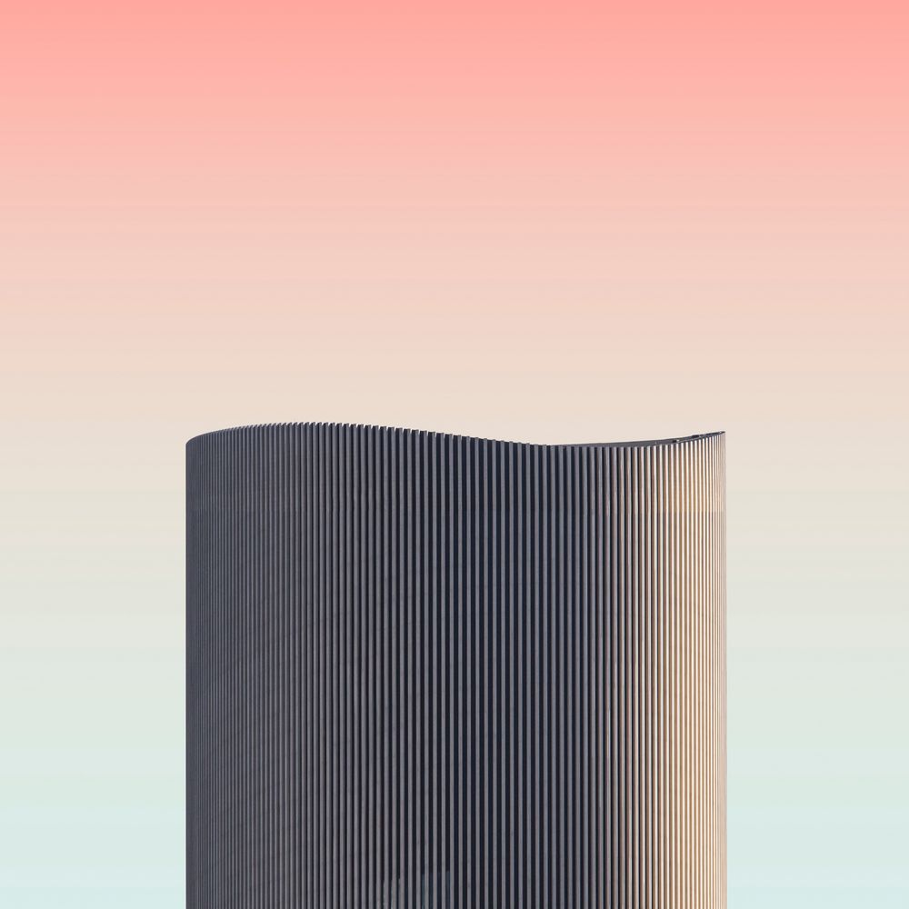
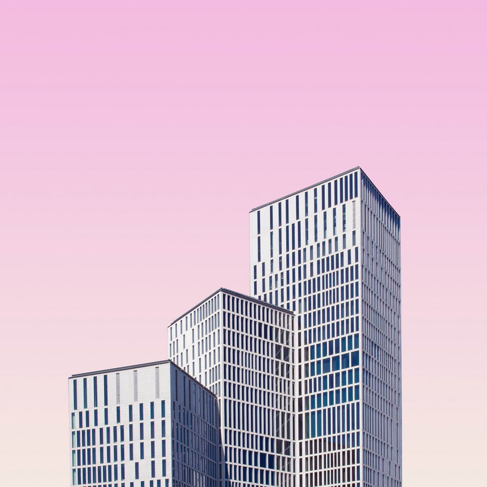

No Code Website BuilderЭмзэг хэсэгт байгаа иргэдийн амьдралын чанарыг сайжруулахын тулд халамж, нийгмийн хөтөлбөрүүд болон халамжийн дэмжлэг шаардлагатай өрхүүдэд хоол тэжээлийн дэмжлэг үзүүлэх, (Вьетнам, Мьянмар); Иргэдийн эдийн засаг, нийгэм, соёлын эрхийг бодитой хангах, иргэдийн зохистой орон байраар хангагдах эрхийг баталгаажуулахад онцгой анхаарч, ядууралтай тэмцэх, нийгмийн даатгалыг сайжруулах (БНАСАУ, Польш, БНХАУ); зөвлөмж өгсөн бөгөөд Засгийн газар хүлээж авсан. Зөвлөмжийг хэрэгжүүлэх төлөвлөгөө /2023.09 сард/ батлан 5 зөвлөмжийг Хөдөлмөр нийгмийн хамгааллын болон Байгаль орчны яамд хариуцахаар заасан. Эдгээр 5 зөвлөмж огт хэрэгжээгүй гэж Хүний эрхийн Форум үнэлсэн. МУ-ын ЗГ “Ажилгүйдэл, ядуурлыг бууруулах үндэсний хөтөлбөр”-ийг 2021.10-р сард хүчингүй болгосон бөгөөд одоог болтол шинэ бодлого гаргаагүй байна. Мөн 2024.05-06 сард Малчдын эрх зүйн байдлыг хөндөх гурван хууль зэрэг батлахдаа малчдын оролцоогээр Парламентын сонгуулийн өмнө “яаралтай горим”-оор баталсан.

Image Description
Сүүлийн гурван жилд эмэгтэй малчид, залуу эмэгтэй малчдын тоо эрс цөөрч байна. 2023 оны жилийн эцсийн байдлаар нийт 983500 өрх бүртгэгдсэн бөгөөд түүний 20 хувь нь зөвхөн малын ашиг шимээрээ амьдарч байна. Уул уурхайн үйл ажиллагаа хууль мөрддөггүй, төрийн хяналт сул, хариуцлагагүй уурхай хэт олон байгаагаас малчин эмэгтйэчүүдийн аюулгүй орчинд амьдрах, уламжлалт бэлчээрийн мал аж ахуй эрхлэх болон нүүдэлчин амьдралын соёлын эрх, мэдээлэл авах, хүсэл зоригоо илэрхийлэх эрхүүд зөрчигдөж байгааг олон судалгааны тайлан, илтгэл, иргэдийн саналд дурдсан байна. Малчин эмэгтэйчүүд нэгэнт уул уурхай түүний дэд бүтцийн сөрөг нөлөөллөөс зугатах боломжгүй тул хортой химийн бодист өртөх эрсдэл өндөр байдаг нь зөвхөн эрүүл мэнд зөрчөөд зогсохгүй, хүнсний аюулгүй байдалд ноцтой заналхийлэл учруулж байна. Төрөөс баримталж буй бодлогууд нь малчин хүн биш, жендэрийн мэдрэмжгүй байгаад зогсохгүй зөвхөн мал руу чиглэсэн арга хэмжээ түлхүү байна. Тухайлбал, малыг нас хүйсээр харуулсан статистик байгаа ч өрхө толгойлсон малчин эмэгтйэ тоо алга байна

Image Description
1. 2024 оны эцэст нийт малчдын 39.9 хувь (123.290) нь эмэгтэй малчид байна. 25-54 насны насны малчид нийт малчдын 74.3 хувийг эзэлж байгаа хэдий ч тэдний 75.0 хувь нь эрэгтэй, ердөө 25.0 хувь нь эмэгтэй малчид байна.
2. Өрх толгойлсон эмэгтэй малчдын тоо болон уул уурхай түүнйи дэд бүтцийн нөлөөллийн бүсэд байгаа малчин өрхийн тоо төрийн байгууллагад нэгтгэгдэж гарахгүй байна.
3. Малчид ЭМД болон НДШ төлсөн ч үр шим хүртэж чадахгүй байна.
Image Description
1. 25-54 насны малчид мал маллахад хамгийн тохиромжтой хөдөлмөрийн бүтээл өндөртэй нас төдийгүй мал маллагааны уламжлалт мэдлэг, арга ухаанд суралцах, өвлүүлэх залгамж халаа бэлтгэгддэг чухал үе байдаг. Залуу малчдын дунд хүйсийн харьцаа зөрүү ихтэй байгаа нь малчдын дунд гэрлэлт оройтох, төрөлт буурах, бэлгийн замын халдварт өвчлөл болон шилжилт хөдөлгөөн ихсэх зэрэг нийгмийн сөрөг нөлөөлөл үзүүлж байна.
2. Малчдын хувьд иж бүрэн хүйсийн тэгш байдлыг хангах хөгжлийн бодлого байхгүй байна. Байгаль орчин, Хөдөө аж ахуй, Уул уурхай, Хөдөлмөр, нийгмийн хамгааллын яамд тус тусын салбарын хүйсийн бодлогыг хэрэгжүүлдэг ч аль яам нь малчдын жендэрийн асуудлыг хариуцах нь тодорхойгүй, энэ нь тэдний хэрэгцээ, шаардлагыг орхигдуулах шалтгаан болж байна.
3. Уул уурхайн бүс нутагт иргэд хортой химийн бодист өртөх эрсдэл өндөр байдаг нь зөвхөн эрүүл, аюулгүй орчинд амьдрах эрхийг зөрчөөд зогсохгүй, хүнсний аюулгүй байдалд ноцтой заналхийлэл учруулж байна.
4. Эрүүл мэндийн даатгалд хамрагдсан малчдыг хүйсээр авч үзвэл 33.9 мянга (51.1 хувь) нь эрэгтэй, 32.5 мянга (48.9 хувь) нь эмэгтэйчүүд байна. Нийгмийн даатгал төлдөг малчдын 56.4 хувь нь эрэгтэй, 43.6 хувь нь эмэгтэй байна.
Image Description
4. Малчин эмэгтэйчүүд Мэдээлэл, технологид хүрэх боломж хомс байдлаас шалтгаалан хөгжлийн бодлого, шийдвэр гаргах үйл явц, нийгмийн амьдралд бодитой оролцож чадахгүй, үзэл бодлоо илэрхийлэх, эрхээ хамгаалж гомдол гаргаж чадахгүй байна.
5. ЗГ-ын 2024–2028 оны хөтөлбөрт Говийн бүсийг “аж үйлдвэрийн бүс ”-ээр тодорхойлсон. Уг хөтөлбөрт нүүдлийн малчдын тогтвортой хөгжлийг хангах, эдийн засаг, нийгэм, соёлын эрх, нүүж амьдрах эрхийг хэрхэн хангах талаар огт дурьдаагүй.
Image Description
5. Өдөр тутмын ачаалал ихтэй байдлаас шалтгаалан тэд нийгмийн амьдралд оролцох, мэдээлэл эрэх, хүлээн авах эрхээ бүрэн эдэлж чаддаггүй. Тэдний нийгмийн амьдралд олон хэлбэрээр оролцох боломжийг бүрдүүлэх уян хатан, хүртээмжтэй зохицуулалт дутмаг байна. “Цагаан алт,” “Ноос, ноолуур” “Сүү” зэрэг хөтөлбөрүүдийг хэрэгжүүлсэн. 2023 оноос Ерөнхийлөгчийн санаачилгаар “Хүнсний хувьсгал” хөтөлбөрт малчин эмэгтэйчүүд хэрхэн оролцож, үр шимийг нь хүртэж байгаа нь тодорхойгүй байна.
6. Шинээр байгуулагдсан Засгийн газар 5 их наяд төгрөгийн төсөвтэй “Шинэ хоршооны хөдөлгөөн” бодлогыг эхлүүлсэн. Гэвч эдгээр бодлого, хөтөлбөрүүдийг боловсруулах, батлах, хэрэгжүүлэхээс өмнө малчдад мэдээлэл өгөөгүй, тэдний дуу хоолойг сонсоогүй, уламжлалт мэдлэг, бүс нутгийн нөөц боломж, газарзүйн ялгааг харгалзан үзээгүй баталсан
1. Засгийн газар нэн яаралтай зөвхөн Байгаль орчны үнэлгээгээр хязгаарлахгүй “Жендэрийн мэдрэмжтэй нийгэм, соёлын нөлөөллийн үнэлгээ” аливаа бодлогын шийдвэр гаргахын өмнө заавал хийх эрх зүйн орчин бүрдүүлэх.
2. “Эрүүл мэндийн нөлөөллийн үнэлгээ” хийх журам, аргачлалыг “Жендэрийн мэдрэмжтэй эрүүл мэндийн нөлөөллийн үнэлгээ” болгон сайжруулж практикт яаралтай мөрдөх ;
3. Өмчийн эрх, газар ашиглалтын томоохон төслүүдэд нүүдэлчин Монгол эмэгтэйчүүдийг бүрэн мэдээлэлтэй, бодитойгоор шийдвэр гаргах үйл явцад оролцуулахын тулд ОУХБ-ын 169 дүгээр конвенцыг соёрхон батлах
4. Малчин эмэгтэйчүүдийн нүүдлийн соёлын уламжлалд нийцсэн уян хатан улс төрийн оролцооны хэлбэрийг бий болгох. Тэднийг цахим засаглалын үйл явцад бодитойгоор оролцуулах дижитал чадавхыг бэхжүүлэх бие даасан хөтөлбөр хэрэгжүүлэх.
5. Малчин залуу гэр бүл, залуу эмэгтэйчүүдийн амьдралын чанар, эрүүл мэндийг эрс сайжруулахад чиглэсэн зорилтот бие даасан хөтөлбөр хэрэгжүүлэх, тусгайлан төсөв гаргах.
6. Малчин эмэгтэйчүүдийн хүний эрхийн хэрэгжилтийг харуулах үндсэн үзүүлэлтүүдийг хянах статистик, захиргааны мэдээллийн тогтолцоог бий болгох. Судалгаа, үнэлгээ, мониторинг хийхэд ашиглах боломжтой байхаар сар бүр мэдээлэл цуглуулж, бүртгэлийн зохистой системийг хөгжүүлэх
Хүний эрхийн форумын гишүүн байгууллага
Хил хязгааргүй алхам төв ТББ
Мэйл хаяг : swb.ngo@gmail.com website: www.swb.mn
Facebook page: Хил хязгааргүй алхам төрийн бус байгууллага
No Code Website Builder